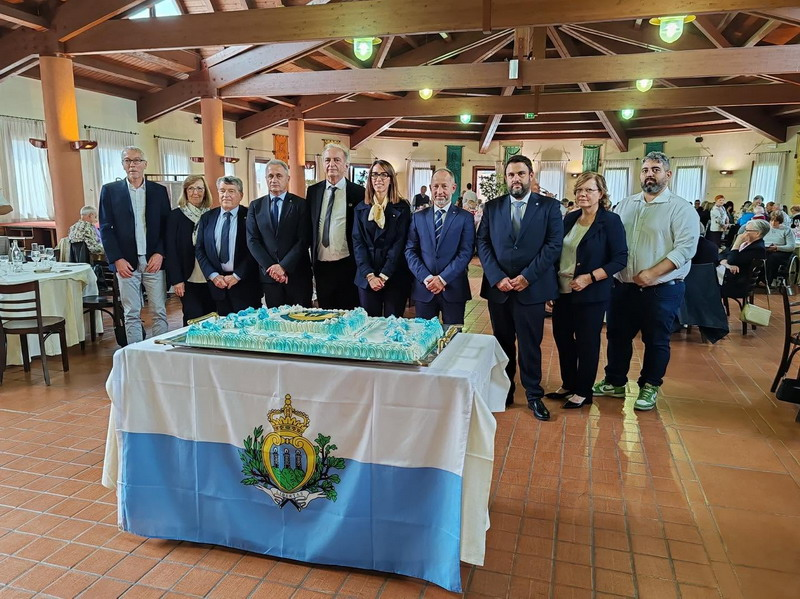
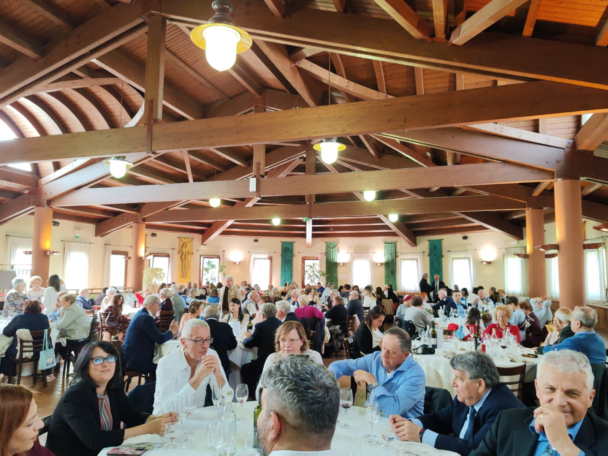

🍽️ Pranzo Sociale 2026
Domenica 17 maggio 2026 presso Casa Zanni si è svolta la consueta assemblea generale dell'Associazione.
Esprimiamo la nostra più profonda gratitudine per l'altissimo onore accordatoci dalla presenza, per la prima volta, delle Loro Eccellenze i Capitani Reggenti.
Il loro intervento, unito a quello delle alte cariche dello Stato, ha conferito alla manifestazione un eccezionale prestigio.
Ringraziamo sentitamente i rappresentanti delle Istituzioni della Repubblica, i Capitani di Castello, i Consoli e le delegazioni delle comunità sammarinesi in Italia: la Loro partecipazione testimonia una forte e preziosa vicinanza istituzionale.


